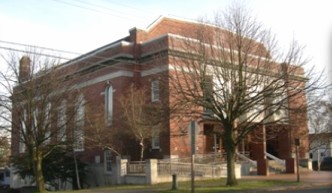
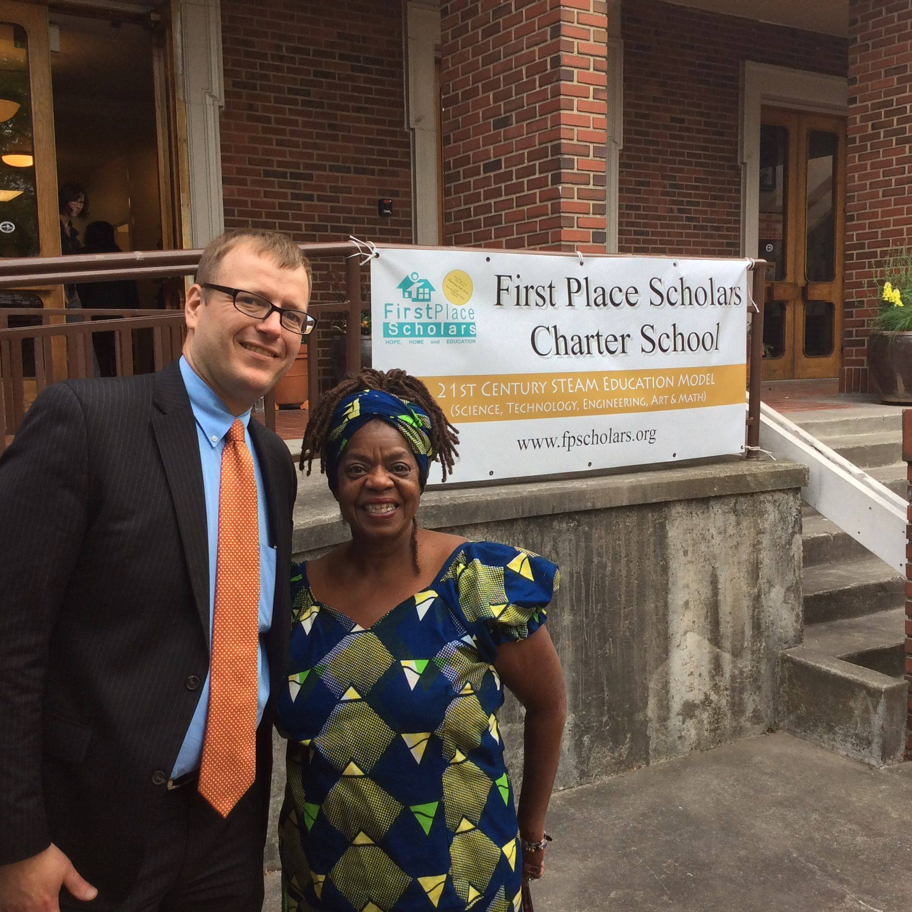

The First Place Organization (now known as First Place Family of Services) was founded in 1989 by a small group of educators and social workers who saw that homeless children were not in school and decided to do something about it. First Place began operating on April 10, 1989, as a transitional school for homeless childres and, by the end of the first week of school, 20 children were enrolled.

The First Place organization incorporated as a 501(c)(3) and became one of four Washington State sites through which homeless children attended school (First Place, 2007). From the beginning, First Place set out to provide the services designed to enable a student and a family to address the complex set of educational, physical, emotional, and environmental issues surrounding their current circumstances. As a result, First Place gave children the special attention and services they were unable to receive in a traditional public school.
For the first decade, First Place elementary school was a partner of the public school system, and received public education and title I dollars as well as private donation. However, when Congress passed the 2001 reauthorication of the McKinney-Vento Act, prohibiting segregation of homeless students, First Place elementary school lost its access to public money. however, McKinney-Vento did not reduce the need for First Place's services. Families and their children continued to come back, both homeless and permanently housed, with needs that the public schools could not meet. The First Place organization evolved organically to meet families' growing and changing needs regardless of the family's housing situation.

Over the years, the school developed a wrap-around model of education and social services to stop the revolving door of traumatic living situations; case managers helped parents or guardians enter stable housing, find jobs, complete their own education, and adovcate for their children's education. The Mental Health Department partnered with local universities and mental health agencies to provide indivdual counseling, testing, and group therapy to students. The volunteer department matched each child with a mentor from the community based on an assessment of the child's personality and needs. The teachers developed specialized knowledge in the needs of traumatized children and deliver culturally-responsive curriculum to support children with disabilities and English language learners along with a diverse array of youth struggling with various individual traumas.